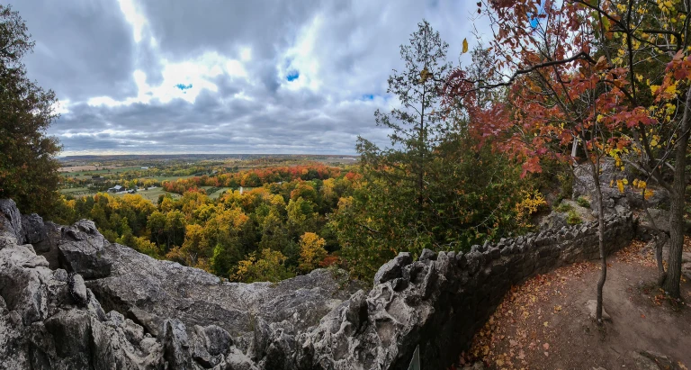
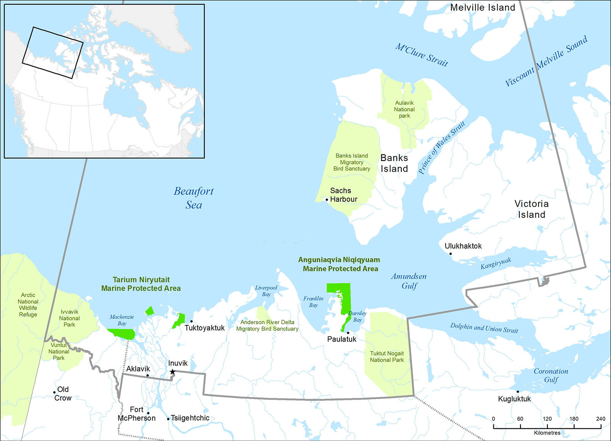

Have you ever wondered how we are still able to preserve nature in a world filled with so much exploitation? Well this is due to protected/conservation areas. In this article I will be discussing protected/conservation areas as well as the laws that protect these areas.
Before we start here are some cites and Additional Information
- Learn More About Conservation Areas and Visiting them
- Learn about the laws and regulations supporting protected areas
- Watch a short video of Anguniaqvia Niqiqyuam
- Learn of a few long term plans for conservation areas by Kawartha Conservation
- View the protected areas in the world
- Learn about Canadas 'Protected Areas Program'
The image above shows the number of protected areas that have increased over ther years.
Ever since the first opening of a national park, Banff national park(protected area) canada has put much effort in creating more over years to sustain the nature of these areas. A graph above shows the growth of the number of parks and conservation reserve systems over the years. Note* this graph starts in 1890, 5 years after the first park opened.
The Different Between Conservation and Protection
Conservation refers to the tools we use to achieve the health and biodiversity of land. Protection refers to the creation of parks in these areas in order to directly protect them from industrial activities, which helps their ecosystem.
Examples of Protected and Conservation Areas
Rattlesnake Point Conservation Area
Located in Milton, Ontario, rattlesnake point is a eco-tourism area. It is conservation area that has hiking/running trails, beautiful views of its animal specices and nature, and rockclimbing
Anguniaqvia niqiqyuam Marine Protected Area
A protected area in the Northwest Territories. Due to it being a critical habitat to many artic animal regulations are put in place to prevent damage of the location and removal of the marine organisms
Protective and Conservation Laws
Canada must have laws in place to ensure the protection and conservation of these areas. Using the jurisdiction canada has in most of these areas, certain laws have been created and enforced based off of the jurisdictions
According to the Government of Canada official website economic, social, and environmental matters need to be considered in order to place these laws such as land usage, habitat protection and most importantly it requires the interest and consideration of first nation people
Some examples of actual laws put in place are the Species at Risk Act, Canada Wildlife Act, and Indian Act and First Nation Land Management Act.